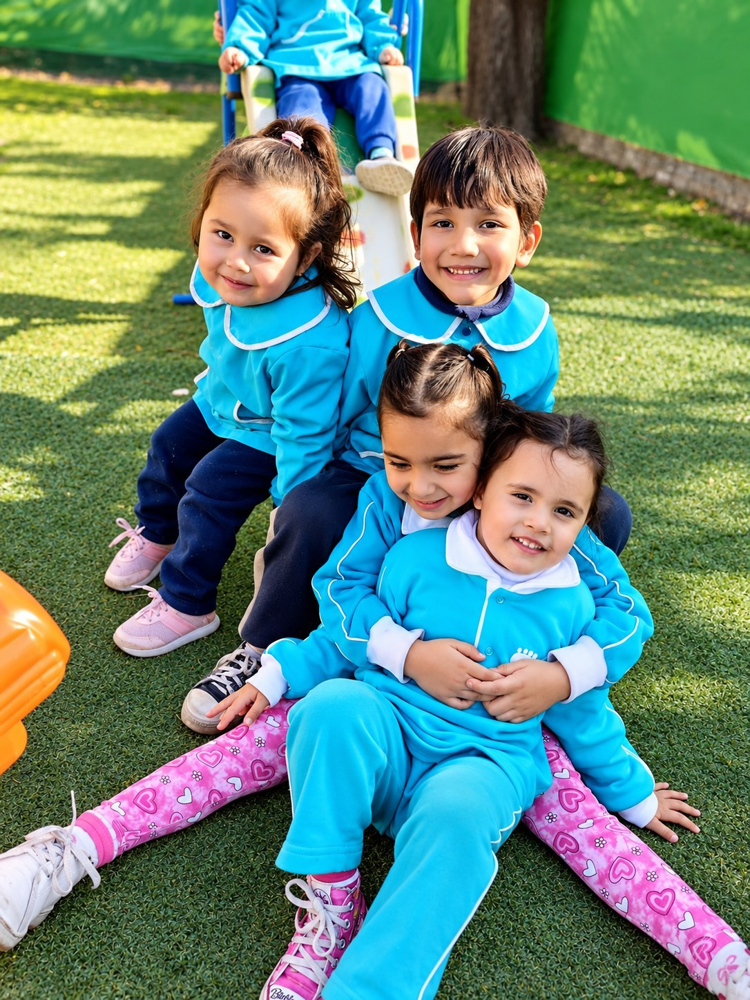
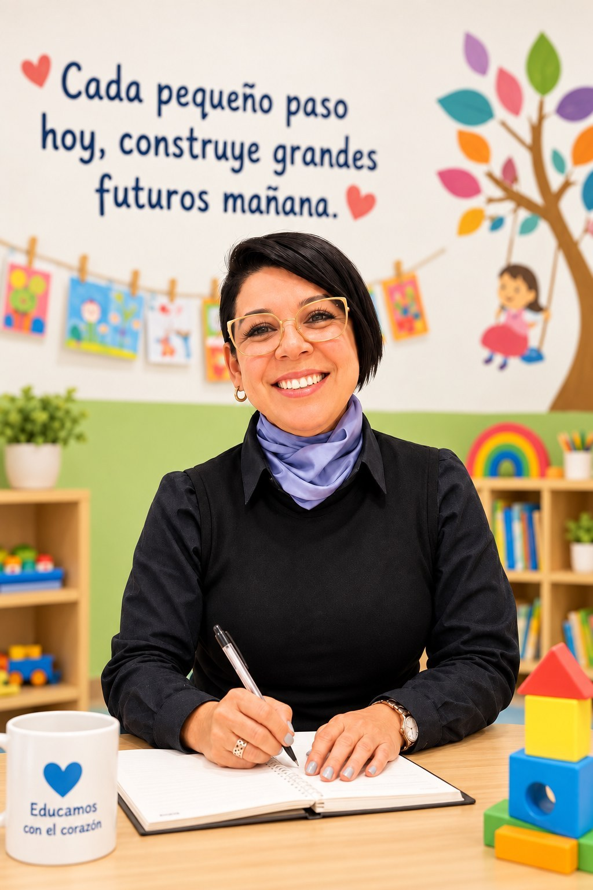
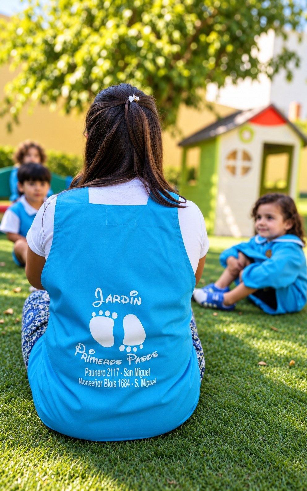
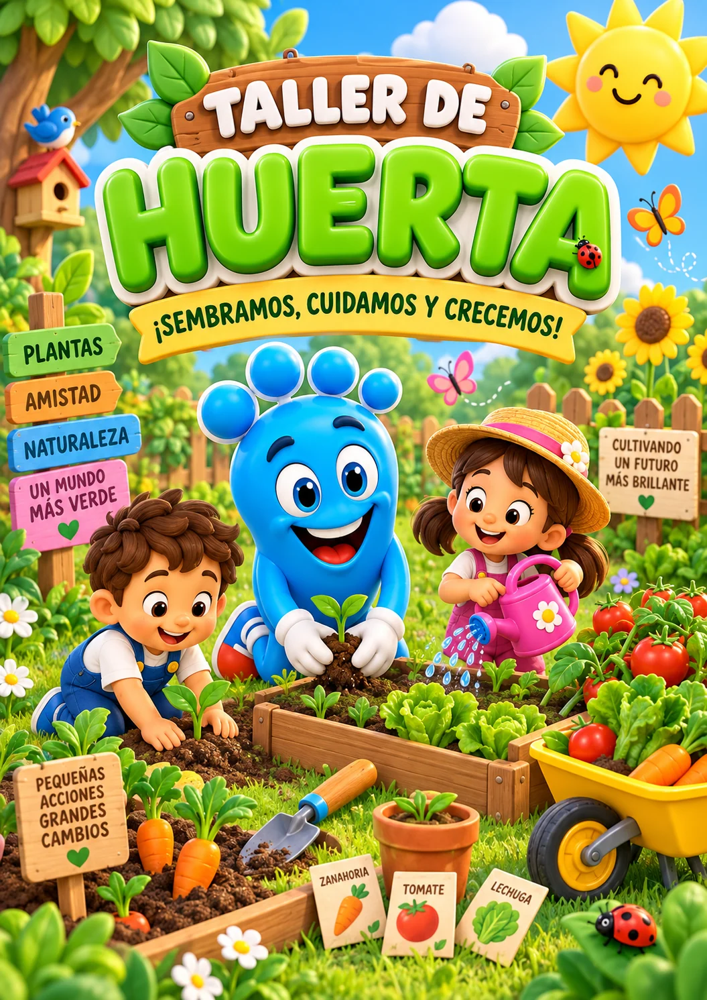
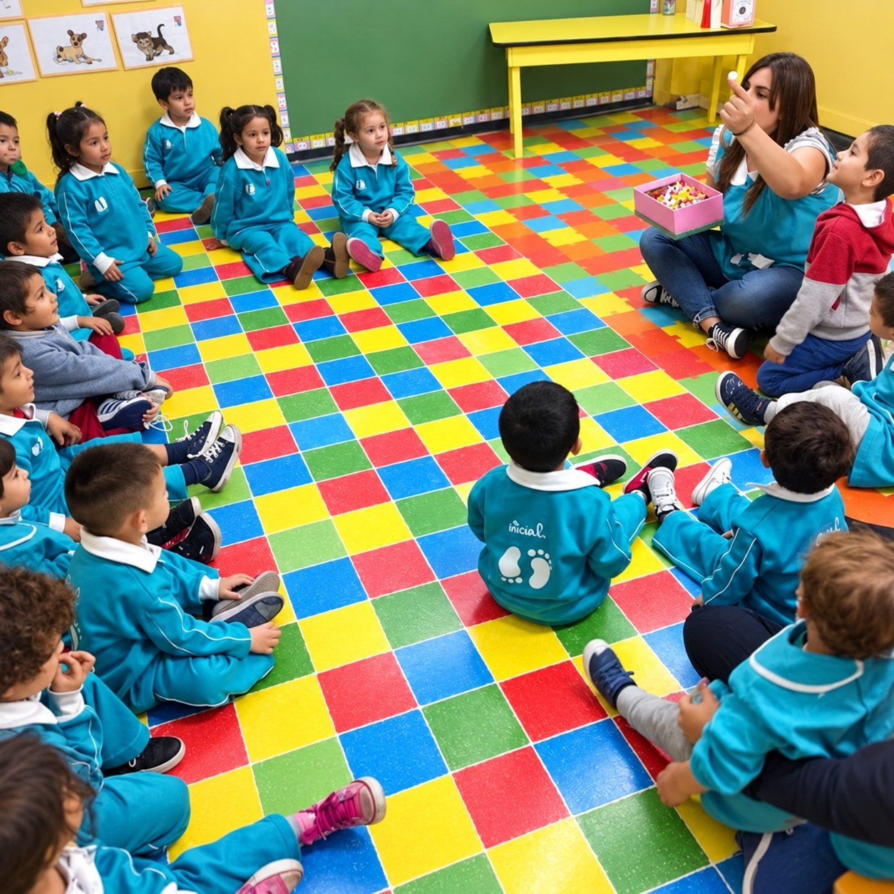

Llegan juntos
Los recibimos en Paunero 2117 y conocen el espacio con tranquilidad.
18 meses a 4 años · San Miguel
Mientras conversás con Rosana, tu peque puede conocer su salita, acercarse a sus seños, jugar y compartir una actividad.

Una primera experiencia, no una reunión administrativa
No hace falta decidir mirando fotos. La visita les permite conocer el lugar, hacer preguntas y observar cómo se siente tu peque en el jardín.
Los recibimos en Paunero 2117 y conocen el espacio con tranquilidad.
Puede acercarse a la salita, a sus seños y participar de una hermosa actividad.
Preguntás todo lo que necesitás saber para decidir con más seguridad.
Primero vivan la experiencia. La decisión viene después.
Experiencias reales de familias
Estas familias compartieron públicamente cómo vivieron el comienzo en Primeros Pasos.
“Nuestra hija lleva un mes en el jardín... y la verdad estamos tan contentos y tranquilos de haber decidido por el mejor lugar. Cada día que pasa la vemos más feliz.”
“Nuestra bebé de un año y nueve meses empezó hace 45 días, se adaptó rapidísimo, va súper contenta y lo más gratificante es verla salir con una sonrisa grande.”
“El tacto, la paciencia y el amor que manejan ese jardín desde la directora hasta los auxiliares es increíble. Súper recomiendo este jardín.”
Rosana los recibe personalmente
La entrevista es una oportunidad para mirar, preguntar y sentir si Primeros Pasos puede ser su lugar.

Lo que puede empezar a descubrir
Lo importante no es acumular actividades. Es que cada propuesta tenga sentido para su edad, despierte curiosidad y le permita ganar confianza.



Antes de venir
Trabajamos con chicos de 18 meses a 4 años.
Se acompaña de manera progresiva, respetando los tiempos de cada chico y conversando con la familia.
Sí. Justamente la propuesta es que vengan juntos para que tu peque conozca el espacio y pueda tener una primera experiencia del jardín.
No. La visita está pensada para conocer el jardín, hacer preguntas y observar cómo se sienten. Primero conozcan; la decisión viene después.
Entrevistas en Paunero 2117 · San Miguel
Vení con tu peque. Conozcan la salita, a sus seños y a Rosana. Después decidan con más tranquilidad.
Ver dos horarios para venir